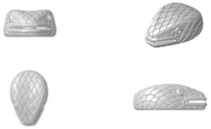

Trade Mark Journal No.2025/011 14 March 2025
WO0000001758167 (9,14,18,25)
Office of origin: Italy
Date of International Registration:15 June 2023
Date of designation in the UK:
15 June 2023

Stylized snake head.
3 Dimensional
International priority date claimed: 16 December 2022
(Italy)
(302022000171504)
- Class 9
- Optical goods; prescription eyewear; sports eyewear; bars for spectacles; spectacle cases; cell phone straps; sleeves for laptops; cell phone covers; frames for sunglasses; spectacle frames; reading glasses; sunglasses; goggles for sports; spectacle holders; chains for spectacles and for sunglasses; spectacle lenses; bags adapted for laptops; downloadable virtual goods, namely, computer programs featuring watches, jewels, jewelry, eyewear, perfumes, bags, accessories and art, for use online and in online virtual worlds; downloadable computer software for interactive games for use via a global computer network and through wireless networks and electronic devices.
- Class 14
- Rings [jewellery]; bracelets [jewellery]; watch bands; watch cases [parts of watches]; chains [jewellery]; watch chains; clasps for jewellery; pendants; jewel cases; necklaces [jewellery]; chronographs [watches]; diamonds; jewellery; cufflinks; medals; medallions; paste jewellery; alloys of precious metal; works of art of precious metal; earrings; hat jewellery; wristwatches; watches; pearls [jewellery]; semi-precious stones; precious stones; key rings [split rings with trinket or decorative fob]; jewelry cases [caskets or boxes]; clock dials; boxes of precious metal; cases for clock- and watchmaking; cases for watches [presentation]; pins [jewellery]; time instruments; watches and jewelry incorporating radio frequency identification (RFID) technology; watches and jewelry incorporating near field communication (NFC) technology; watches and jewelry incorporating digital codes, labels, tags and chips linked to a non-fungible token (NFT).
- Class 18
- Purses; luggage; bags; pocket wallets; rucksacks; luggage, bags, wallets and carrying bags; key cases; vanity cases, not fitted; trunks [luggage]; briefcases; handbags made of imitation leather; textile shopping bags; bags for sports; beach bags; chain mesh purses; handbags; travelling sets [leatherware]; umbrellas; haversacks; valises; attaché cases.
- Class 25
- Foulards [clothing articles]; clothing; headgear; waist belts; shawls and stoles; neck tube scarves; gloves [clothing]; neckties.
Bulgari S.p.A.
Representative: Fieldfisher LLP, IP Protection Department, 8th Floor, Riverbank House, 2 Swan Lane London EC4R 3TT UNITED KINGDOM